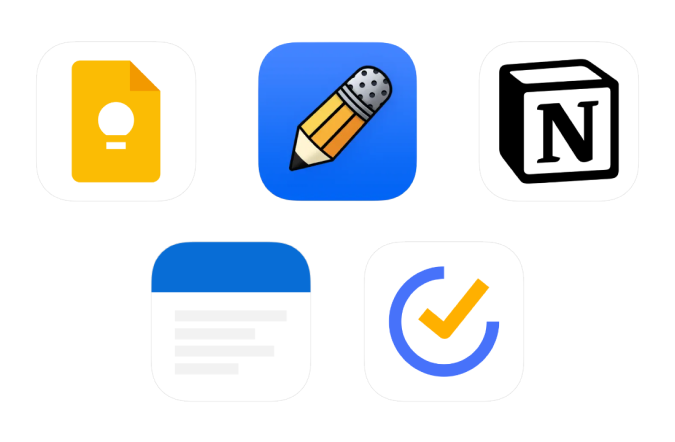
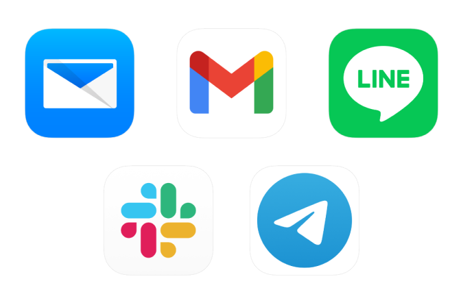
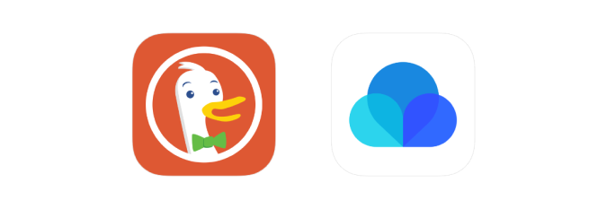
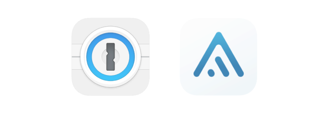

22 Essential Apps I Use Daily — 2022
Zartre - Jul 27
I have never shared my suite of essential apps before, so here it is. As I have multiple devices running different operating systems(Android, iOS, macOS, Windows), I give a first priority to apps with cross-platform support.
Note taking

Google Keep: For quick notes, shopping lists for the day, and short notes I want to keep handy. It employs
Material You design which looks nice on my Pixel 5. My notes are synchronised and accessible on all my
devices.
Notability: For written notes, scribbles, language learning, meeting notes. My notes are backed up to Google
Drive.The only downside is that the app is available only on iOS and macOS.
Notion: For serious notes, travel plans, wikis, learning, notes that need text formatting. Notion is very powerful
at being a database and creating interactive notes. I can also collaborate with friends when planning a trip.
Standard Notes: For plain text notes. I like the simplicity and the sense of privacy and security that Standard
Notes offers. Notes are encrypted end-to-end and you can also lock the app with different passcodes on each
device. More features can be added (on paid plans) through extensions.
TickTick: For to-do lists. I can organise tasks into lists, assign a priority, repeat occurrences, add tags, add
subtasks, and do habit checks. The app is simple, lightweight, and works fast on all my devices.
Communication

Edison Mail: An email client on my iPad. I just like the design.
Gmail: It comes with my phone and it works well so I don’t want to download anything else and keep two
email apps on my phone.
LINE: For messaging family and high school friends. I don’t really want to use it because the app is big and
bloated, but it has been well embodied in Thai culture since many businesses and government services offer
their communication and membership channels there.
Slack: My company uses this.
Telegram: For messaging friends. I can tell you this is the BEST messaging app. It is lightweight and crazy fast
on all my devices. It has creative and useful features I and my friends actually use and love. The app is simple
and interactions feel natural.
Web browsing

DuckDuckGo Browser: I don’t want to be tracked. The good things are random private emails and tracking
prevention. The downside as of this writing is that the desktop version doesn’t support extensions so I have to
manually open 1Password, search for credentials and click autofill. Having no extensions means I have to
organise my bookmarks manually too (with Raindrop).
Raindrop.io: For saving links. I can organise my links with tags and folders.
Security

1Password: For storing and generating credentials. The user interface is clean and feels welcoming. It can store
OTP’s and automatically fill them (but I don’t use that feature). It can check if your passwords have appeared in
breaches, or are reused on multiple services. It can store many kinds of credentials other than passwords: SSH
keys, notes, identities, etc. Browser extensions work quite fast too.
Aegis: For storing OTP’s. It is simple, fast and lightweight. I can backup the vault—encrypted—so I don’t have
to reconfigure 2FA on all services when I change my phone. I wanted to use 1Password for storing OTP’s
because it would automatically fill them, but what’s the purpose of two-factor authentication, then?